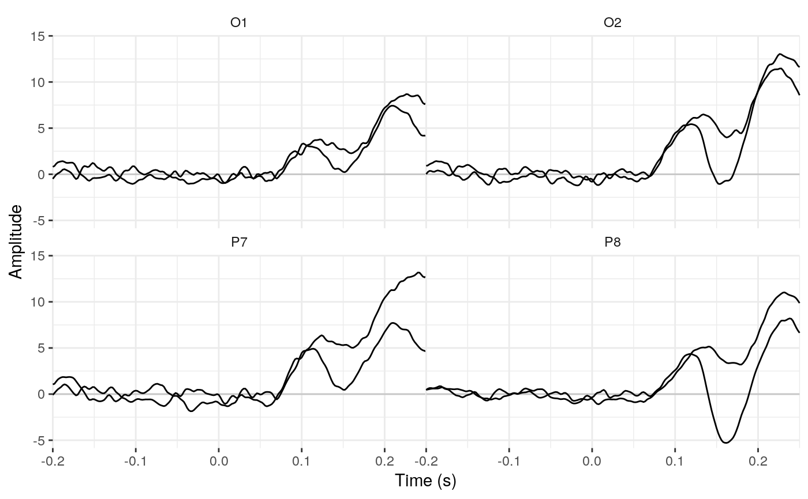
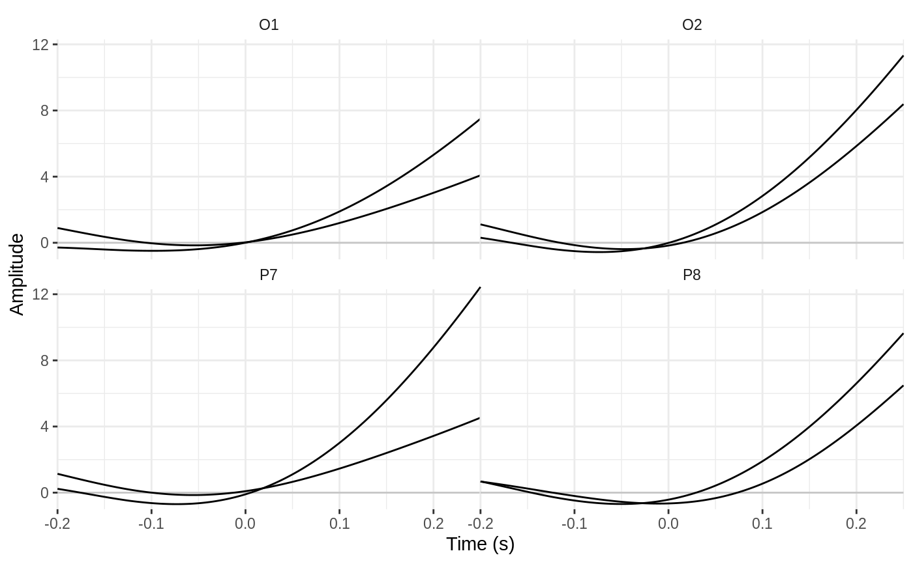

Apply a zero-phase low-pass, high-pass, band-pass, or band-stop FIR or IIR filter.
Source:R/filters.R
filt.RdApply a low-pass, high-pass, band-pass, or band-stop filter to every segment of an eeg_lst. These filters are adapted from the FIR and IIR filters in MNE package (v 0.0.17.1) of python. For background information about the FIR vs IIR filters, see here.
Usage
eeg_filt_low_pass(.data, ..., .freq = NULL, .config = list(), na.rm = FALSE)
eeg_filt_high_pass(.data, ..., .freq = NULL, .config = list(), na.rm = FALSE)
eeg_filt_band_pass(.data, ..., .freq = NULL, .config = list(), na.rm = FALSE)
eeg_filt_band_stop(.data, ..., .freq = NULL, .config = list(), na.rm = FALSE)Arguments
- .data
A channel or an eeg_lst.
- ...
Channels to apply the filters to. All the channels by default.
- .freq
A single cut frequency for
eeg_filt_low_passandeeg_filt_high_pass, two edges foreeg_filt_band_passandeeg_filt_band_stop.- .config
Other parameters passed in a list to configure the filters. See details for options.
- na.rm
=TRUE will set to NA the entire segment that contains an NA, otherwise the filter will stop with an error.
Details
eeg_filt_low_pass()Low-pass or high-cut filter.eeg_filt_high_pass()High-pass or low-cut filter.eeg_filt_band_pass()Band-pass filter.eeg_filt_band_stop()Band-stop filter.
After setting a filter method. The filters can be configured passing a list to the argument .config.
Using method ="fir", we define a zero-phase filter of the FIR (finite impulse response) class (MNE v 0.0.17.1 default); these are the options:
l_trans_bandwidth = "auto"by default. This ismin(max(l_freq * 0.25, 2), l_freq), wherel_freqis thefreqof the high pass filter, orfreq[1]of a band pass/stop filter.h_trans_bandwidth = "auto"by default. This ismin(max(0.25 * h_freq, 2.), sampling_rate / 2. - h_freq)whereh_freqis thefreqof the low pass filter, orfreq[2]of a band pass/stop filter.
Using method = "iir", we define a zero-phase (two-pass forward and reverse) non-causal IIR filter. Filter type is Butterworth by default, and either order (default) or maximum loss and attenuation (gpass and gstop) should be specified:
type = "butter"for Butterworth by default, other options are"cheby1", or"cheby2"for Chebyshev type I or type II, or"ellip"for Elliptic.order= 6 by default for low and high pass, and 4 by default for band pass and stop filters (this follows the defaults of Fieldtrip matlab package). Notice that the effective order after forward-backward pass is multiplied by two.gpass : The maximum loss in the passband (dB).
gstop : The minimum attenuation in the stopband (dB).
See also
Other preprocessing functions:
eeg_baseline(),
eeg_downsample(),
eeg_ica(),
eeg_ica_keep(),
eeg_rereference(),
eeg_segment()
Examples
library(ggplot2)
data("data_faces_ERPs")
data_ERPs_filtered <- data_faces_ERPs %>%
eeg_filt_low_pass(.freq = 1)
#> Setting up low-pass filter at 1 Hz
#> Width of the transition band at the high cut-off frequency is 2 Hz
# Compare the ERPs
data_faces_ERPs %>%
eeg_select(O1, O2, P7, P8) %>%
plot() +
facet_wrap(~.key)

data_ERPs_filtered %>%
eeg_select(O1, O2, P7, P8) %>%
plot() +
facet_wrap(~.key)
